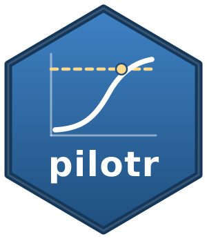

Derive a brms formula, family, and priors from a design spec
Source:R/brms_bridge.R
brms_bridge.RdDerive a brms formula, family, and priors from a design spec
Arguments
- spec
a design spec (path or list).
- prior_scale
The standard deviation of the normal prior on a standardised main effect for the continuous families, that is on the coefficient multiplied by its column's standard deviation and divided by the response's. For
bernoulli,poisson,ordinalandbeta, it is the standard deviation of the prior on the coefficient itself, on the link scale.- interaction_scale
The same for interaction terms. Defaults to half of
prior_scale.
Value
An object of class pilotr_bridge: a list with elements formula, family,
priors, and code, the last being a ready-to-fit brms model. The object is returned
visibly, and print.pilotr_bridge() writes code to the console, so a bare call shows
the model while an assignment stays silent.
Details
The formula names the analysis columns of the design: each factor's numeric contrast columns
and the predictors, with every interaction left for brms to form from its parts. A data set
as simulate_design() returns it holds the factors' level labels and not their contrast
columns, so it goes through model_data() first, as in
model_data(spec, simulate_design(spec)). The emitted call says so beside its data
argument. Collected data laid out in the same way go through model_data() too.
brms names an interaction coefficient after its parts in the order they first appear in the
formula, as stats::terms() does, so a key cond:age in a specification that lists age
first is the coefficient age:cond. The formula and the priors use the name brms uses. A
specification that gives one interaction two keys, such as cond:age and age:cond, is
refused, since brms estimates a single coefficient for it.
For gaussian and exgaussian responses, the coefficients are on the response's own scale,
and for lognormal and shifted_lognormal on the scale of its logarithm, so their priors are
scaled to the data the design produces. Take sd_y to be the square root of the total
variance that response_variance() reports, and sd_x the standard deviation of a
coefficient's column in model_data(spec, simulate_design(spec)), an interaction's product
column included. The coefficient's prior is then normal(0, s * sd_y / sd_x), where s is
prior_scale for a main effect and interaction_scale for an interaction, and the
random-effect standard deviations take a half-normal prior with standard deviation sd_y.
For bernoulli, poisson, ordinal and beta, the coefficients are on the logit or log
scale, which does not depend on the response's units. A coefficient's prior is then
normal(0, s) per unit of its column, and the random-effect standard deviations take
normal(0, 1). These widths suit contrast columns and standardised predictors, while a
predictor on a wider scale, such as age in years, gets a correspondingly wider prior per
standard deviation. Widths are written to four significant digits.
A prior on the random-effect standard deviations is emitted only when the design has random effects, and an LKJ prior on their correlations only when some grouping factor's effects are correlated. brms refuses a prior on a parameter the model does not contain. The intercept and the family's own parameters, such as the residual standard deviation, take brms's default priors. For the continuous families, brms centres the intercept's default prior on the median of the response, or of its logarithm for the two lognormal families.
A Bayes factor computed against these priors depends on their widths (Kass and Raftery,
1995), so a different prior_scale gives a different Bayes factor from the same data. For a
continuous family at the default of 0.5, a standardised effect of 0.5 lies one prior standard
deviation from zero.
References
Kass, R. E. and Raftery, A. E. (1995). Bayes factors. Journal of the American Statistical Association, 90(430), 773-795. doi:10.1080/01621459.1995.10476572
See also
print.pilotr_bridge() for the display, and model_formula() for the frequentist
counterpart of the formula.
Examples
spec <- build_spec(list(name = "d", seed = 1, design_kind = "within",
include_items = TRUE, n_subject = 20, n_item = 12, factor_name = "cond",
lev1 = "a", lev2 = "b", intercept = 6, effect = 0.05,
subj_int_sd = 0.12, subj_slope_sd = 0.04, subj_corr = 0.2,
item_int_sd = 0.08, item_slope_sd = 0.02, item_corr = -0.1,
family = "shifted_lognormal", resp_name = "RT", sigma = 0.3, shift = 200))
bridge <- brms_bridge(spec) # silent
bridge$formula
#> [1] "RT ~ effect + (1 + effect | subject) + (1 + effect | item)"
bridge # prints the ready-to-fit model
#> library(brms)
#> fit <- brm(
#> RT ~ effect + (1 + effect | subject) + (1 + effect | item),
#> data = your_data, # model_data(spec, simulate_design(spec)) adds the contrast columns
#> family = shifted_lognormal(),
#> prior = c(
#> prior(normal(0, 0.3342), class = "b", coef = "effect"),
#> prior(normal(0, 0.3346), class = "sd"),
#> prior(lkj(2), class = "cor")
#> ),
#> chains = 4, iter = 4000, warmup = 2000, cores = 4,
#> control = list(adapt_delta = 0.95)
#> )